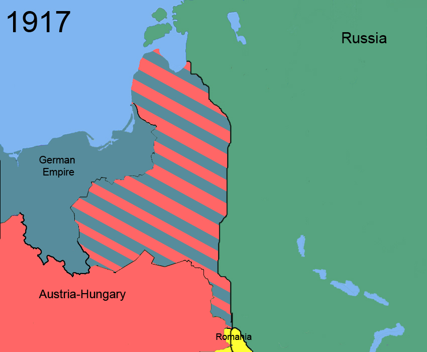
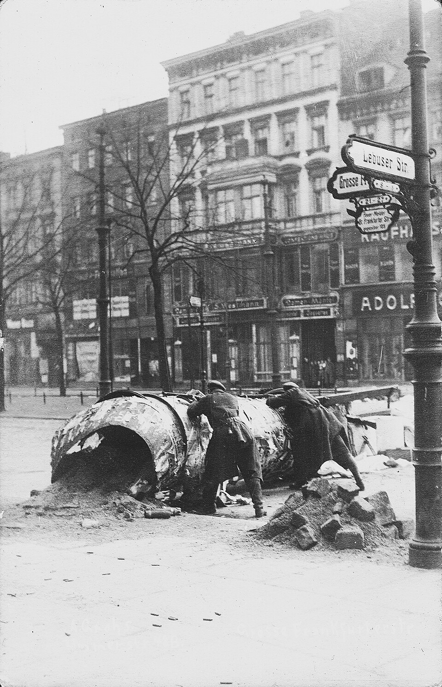
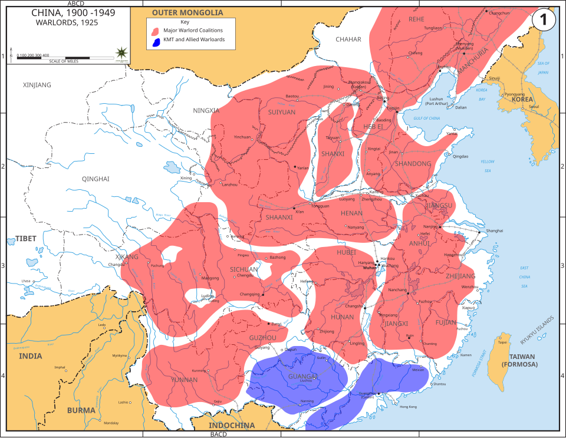

VOL. 00｜總論與公式篇
1914–1945 全歐亞框架
路線兩難、歐亞連動網與地方崛起公式
核心問題：兩次大戰如何製造權力真空？同喊社會主義的四派為何互打？地方勢力靠什麼走完奪權最後一哩？
跨國連動亮點：一圖掌握白俄流亡者、FT-17 坦克、契卡機制與西班牙老兵的跨洲串聯，並收錄邁克爾·塞德曼（Michael Seidman）後方治安比較與史料邊界清單。
兩次世界大戰打碎舊帝國與中央秩序後，各地左翼與地方武裝陷入「基層自治」與「集權贏戰」的深刻兩難。縱觀歐亞五大戰場，最終唯有同時掌握農村土改、跨群體統戰與後方治安的勢力，才能從地方游擊蛻變為全國政權。
核心問題：兩次大戰如何製造權力真空？同喊社會主義的四派為何互打？地方勢力靠什麼走完奪權最後一哩？
核心問題：工農兵「蘇維埃」（soviets）為何在解散立憲會議後走向一黨制？紅軍如何靠強徵與 83% 舊軍官取勝？

核心問題：水兵起義推翻帝制後，多數派社民黨（SPD）為何懼怕俄式內戰，寧願聯手舊軍方與資方鎮壓斯巴達克起義？

核心問題：中央崩潰如何催生軍閥與農民自衛會社？國民黨移植列寧式黨軍後為何因「整批收編」埋下病根，讓中共藉敵後土改勝出？

核心問題：為何 1936 年工人武裝擋下軍事政變並推動集體化，卻在巴塞隆納「五月事件」街頭火拚與 27 國禁運下敗給佛朗哥？
核心問題：在德軍百人質屠殺與烏斯塔沙暴行夾擊下，狄托游擊隊如何從 8.1 萬打成 80 萬正規軍，並成為戰後敢與史達林分裂的政權？